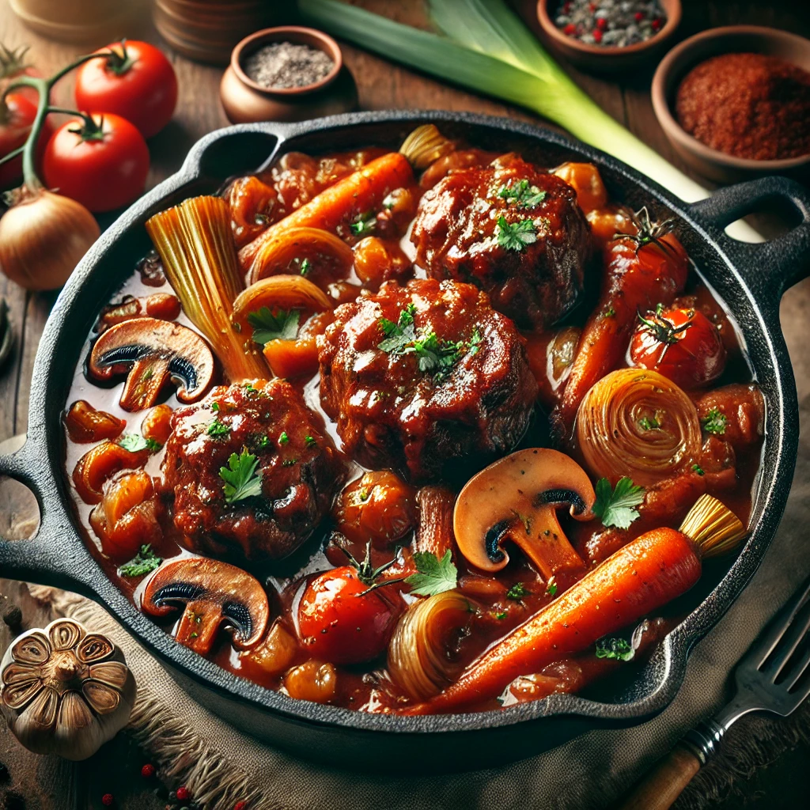
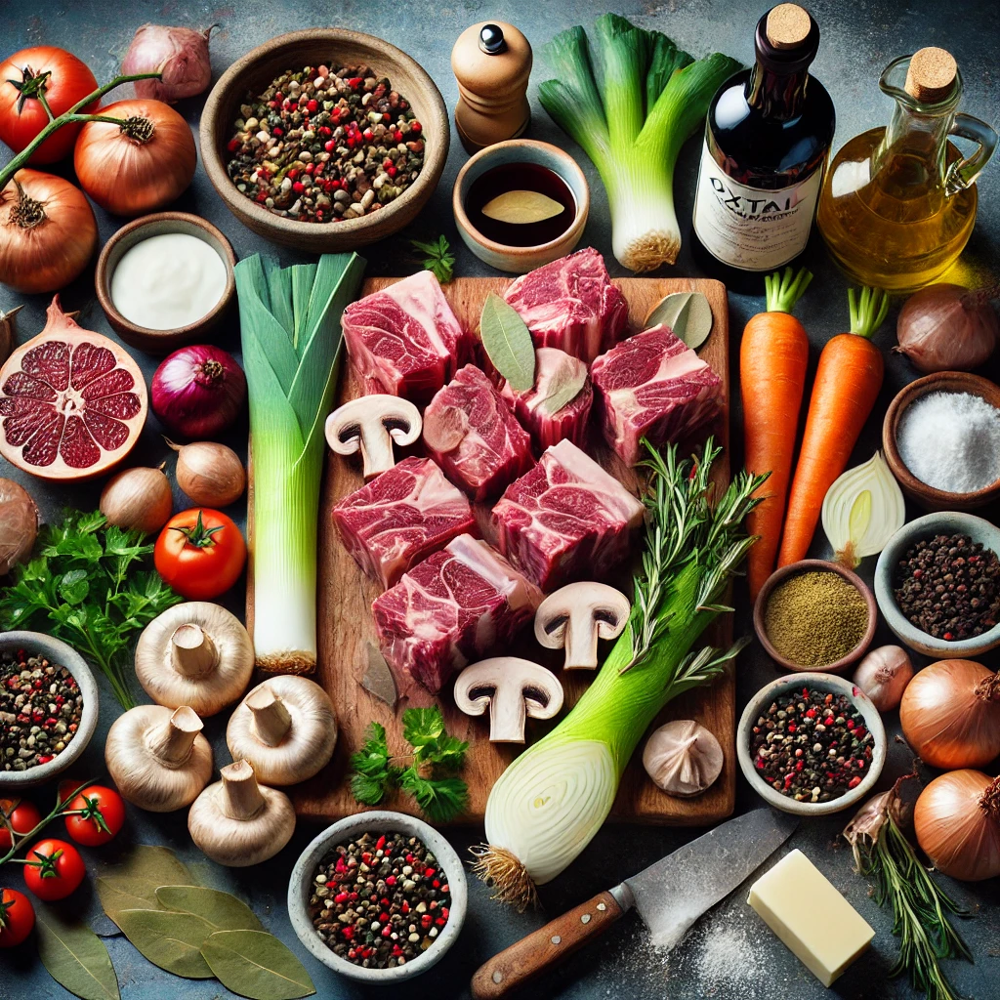

Home
Oxtail-Potjie

Description
Oxtail Potjie (pronounced poi-key) is a hearty South African stew traditionally cooked in a cast-iron,
three-legged pot over an open fire. This slow-cooked dish features tender, fall-off-the-bone oxtail pieces simmered
with a mix of vegetables, aromatic herbs, and spices in a rich, flavorful gravy. The method of cooking allows the
flavors to meld beautifully, creating a comforting,
rustic meal.
Potjiekos, which means "small pot food" in Afrikaans, is deeply rooted in South African culinary
traditions and is often prepared during social gatherings, festivals, or outdoor family events. The recipe reflects
a communal culture, where people gather around the potjie and the fire, taking part in the cooking
and sharing stories.
Oxtail Potjie is most popular in South Africa but is also enjoyed in neighboring countries like
Namibia, Zimbabwe, and Botswana, where potjiekos is a widely appreciated cooking style. It has its roots in
Dutch settlers' cooking methods, adopted and adapted over centuries in Southern Africa.Today, it is a hallmark of
South African braai (barbecue) culture, symbolizing warmth, togetherness, and hospitality.
Ingredients

- 500g Oxtails cut 2 inches thick pieces
- 10 slices Bacon cut in 1 inch pieces
- D cup Flour seasoned with salt and pepper
- 1 litre beef stock
- 2 unions
- 3 tomatoes
- green peppers
- 6 large leeks, chopped coarsely
- 6 large carrots, chopped coarsely
- 20 button mushrooms
- 1 cup red wine
- 2 tablespoons butter
- 2 tablespoons olive oil
- D cup sherry
- D cup cream
- 2 tablespoons crushed garlic
Steps
- Dry oxtail pieces with a paper towel.
- Put seasoned flour in a Ziplock bag, add oxtail, and shake to coat with flour.
- Heat butter and olive oil, then sauté bacon pieces.
- Remove bacon and brown oxtail in the resulting fat, then remove and drain.
- Finely dice 4 carrots. Coarsely chop onions and leeks.
- Sauté diced carrots, leeks, and onions until softened.
- Add oxtail, bacon, bouquet garni, bay leaf, peppercorns, garlic, tomato paste, red wine, and sherry.
- Bring to a boil, then simmer slowly for 3–4 hours.
- 1 hour before serving, cut the remaining carrots into 1-inch pieces, add them and mushrooms, and continue cooking.
- Just before serving, add cream and stir.
- If you want to thicken the sauce, mix corn-starch with cream before adding.